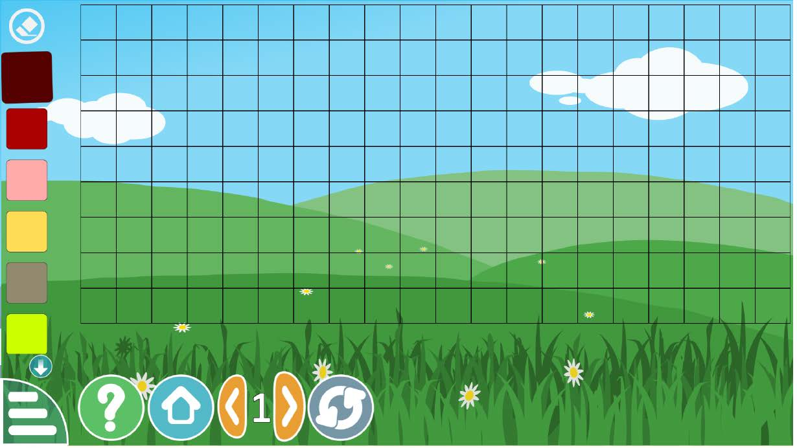
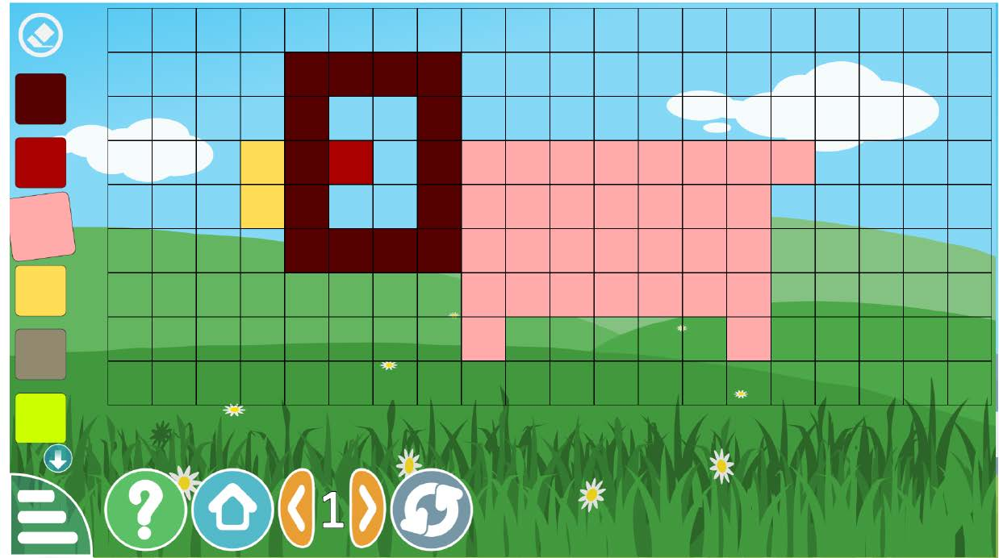

2. Use your finger or a stylus to paint within the shapes on the screen. Refer to Figure 7(a) and its description. Make them as colourful as you wish, as shown in Figure 7(b).

(a) Beginning of the drawing game

(b) End of the drawing game
Figure 7: Simple drawing game